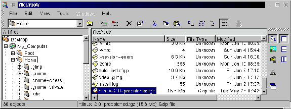
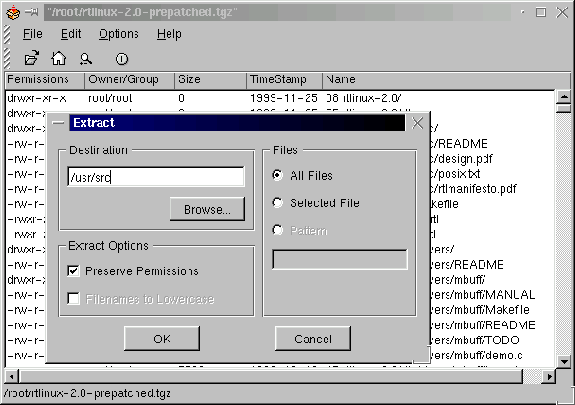

Download a clean prepatched kernel from rtlinux.org http://www.rtlinux.org rtlinux-2.0 is intended to be used with Linux 2.2.13 rtlinux-2.2 is intended to be used with Linux 2.2.14 rtlinux -2.2a is also intended to be used with Linux 2.2.14 Sometimes my browser wants to show a file rather than save it so I place the cursor over the file that I want to download and click the right mouse button rather than the left. This brings up a window that lets me name the file to download.
I placed this file in the home directory of root. When the download was complete I looked at the directory.
ls -l /root/rt*
-rw-r-r- 1 root root 16617862 May 16 14:59 rtlinux-2.2a-prepatched.tgz
That looks OK so I want to untar it into /usr/src
tar xzvf /root/rtlinux-2.2a-prepatched.tar.gz /usr/src
Note 2.2/2.2a - Both use the same rtlinux-2.2 directory when taken out of the tar ball.
A whole bunch of stuff goes across the screen indicating all of the files that tar is placing in /usr/src. This creates a new directory /usr/src/rtlinux-2.2 and sets up the new kernel structure below it. [install/images/expl01.gif]

If you are uncomfortable with using command line stuff like tar, you can use the kde file system explorer and archiver. You will need to start x-windows and use the kde windows manager for your system to look anything like the pictures included above. (Note shows 2.0) [install/images/archive.gif]

Now if you double left click on the little file symbol to the left of the rtlinux...tgz file name, explorer will open that file with the kde archiver. This window allows you to see all of the files that are in the tgz file.
You can select the extract to item from the file menu or click on the little magnifying glass icon and archiver brings up the extract window. Enter the destination for the extraction /usr/src and click OK and in a minute or so the job will be done.